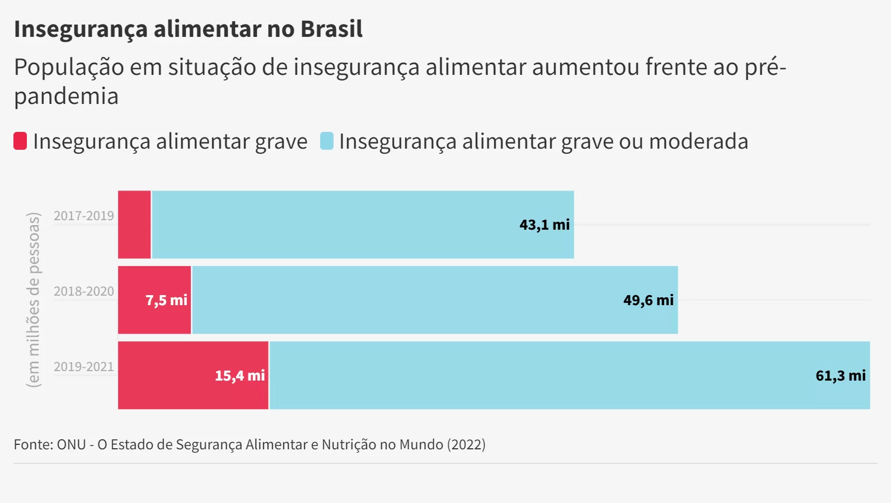
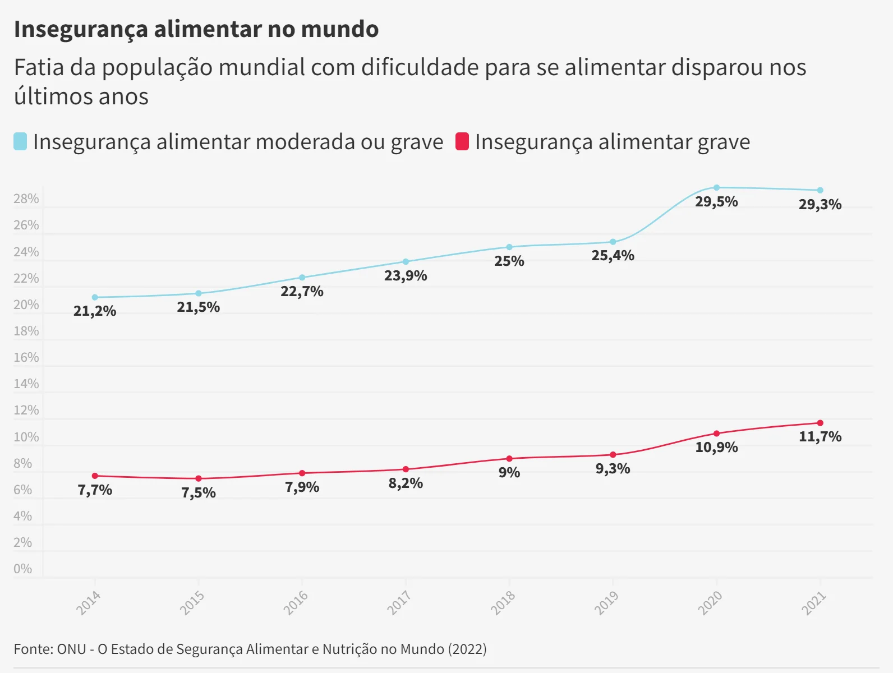
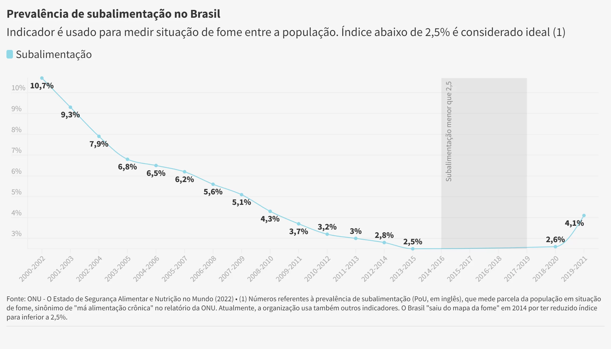

A Ameaça da Fome em Ascensão
A fome avançou rapidamente nos países mais pobres, segundo relatório de grupos de agricultura e alimentação da ONU
A fome aumentou em todo o mundo nos últimos dois anos, e a situação não está perto de melhorar, aponta novo relatório de braços de agricultura, alimentação e saúde da Organização das Nações Unidas (ONU)
Entre 702 e 828 milhões de pessoas foram afetadas pela fome no mundo em 2021, segundo o estudo.
Os motivos para a piora no cenário incluem os problemas econômicos gerados pela pandemia. Se o combate à fome já era um desafio antes, a situação se intensificou com questões como o aumento da cotação de grãos e outros itens essenciais no mercado internacional, além dos gargalos na cadeia de suprimentos que têm gerado inflação em todo o mundo.
Abaixo vemos um gráfico com a porcentagem da população com insegurança alimentar.
Para além das pessoas com fome, a insegurança alimentar grave ou moderada também subiu e atinge uma em cada três pessoas no mundo (29% da população), um total de 2,3 bilhões de pessoas. Só o grupo com insegurança alimentar grave é de 924 milhões de pessoas (12% da população mundial). Se confirmado, o número será na prática um retrocesso aos patamares de 2015, quando foi lançado o objetivo de acabar com a fome e a insegurança alimentar até 2030.
Enquanto isso, no curto prazo, o cenário de fome no mundo pode ainda piorar com a guerra na Ucrânia e seus efeitos, diz o diretor executivo do Programa Mundial de Alimentos da ONU, David Beasley. Para ele, o mundo está diante de uma "catástrofe iminente". O Brasil chegou a 15,4 milhões de pessoas em situação de insegurança alimentar grave, o equivalente a 7,3% da população no cálculo de prevalência da ONU.
A organização aponta que a situação vem piorando. Em 2014, quando o Brasil atingiu um de seus melhores patamares, a insegurança alimentar grave afetava 3,9 milhões de pessoas, ou 1,9% da população. Se incluída também a população com insegurança alimentar moderada, são 61,3 milhões de pessoas, quase um terço da população brasileira (29%) sendo forçada a reduzir a alimentação algumas vezes durante o ano por falta de recursos. A prevalência de subalimentação, no entanto, é usada até hoje pela ONU para definir o número de pessoas com fome no mundo - uma condição em que "o consumo habitual de alimentos de um indivíduo é insuficiente para fornecer a quantidade de energia dietética necessária para manter uma vida normal, ativa e saudável".
Qual é a diferença entre fome e insegurança alimentar?
A fome é definida pela ONU como "privação de comida", levando a "uma sensação desconfortável ou dolorosa causada pela energia insuficiente da dieta". No relatório, o termo fome é sinônimo de "má alimentação crônica" e medido pela prevalência de subalimentação (índice PoU, na sigla em inglês).
A insegurança alimentar grave pode incluir algumas situações de fome durante o ano, indicando que as pessoas desse grupo viveram momentos em que "experimentaram fome e, no extremo, ficaram sem comida por um dia ou mais".
A insegurança alimentar moderada indica uma "falta de acesso consistente" aos alimentos. Nesse grupo, "as pessoas enfrentam incertezas sobre sua capacidade de obter alimentos e foram forçadas a reduzir, algumas vezes durante o ano, a qualidade e/ou quantidade de alimentos que consomem por falta de dinheiro ou outros recursos", segundo a ONU.